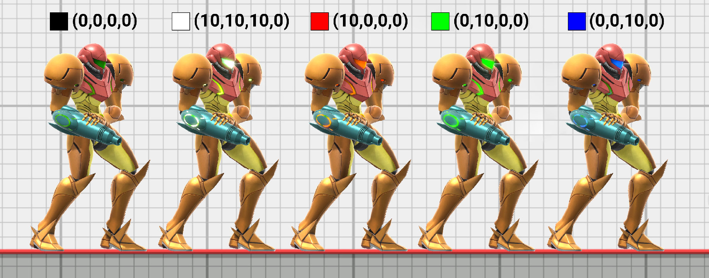
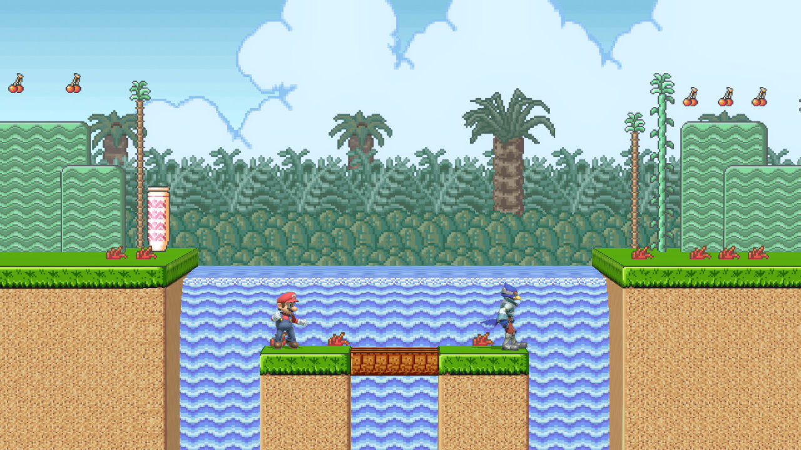

Emissive maps (often abbreviated _emi in texture file names) are used for materials that emit their own light.
In Smash Ultimate, these materials don't actually emit light onto other objects, but emission textures can still be
used for lights, glowing patterns, or shadeless materials whose color shouldn't be affected by lighting.

A comparison of different values for CustomVector3. The alpha value is unused for Samus's shaders.
Emission materials use CustomVector3 as a color multiplier for the emissive map. The emissive textures only store values between 0.0 and 1.0, so adding a separate intensity parameter allows for a final emission intensity much higher than 1.0. Very large values for CustomVector3 like (50.0, 50.0, 50.0, 0.0) will increase the size of the "glow" caused by bloom. A value of (0, 0, 0, 0) effectively disables the emission.

All of the stage materials in this screenshot are colored using emissive maps.
The emission color is not affected by stage lighting, which is ideal for "shadeless" materials. If CustomVector3 is set to (1.0, 1.0, 1.0, 1.0), the color on the emissive map is the final color that will be rendered on screen. Shadeless materials are useful for retro stages or for prendered background elements that don't need to be lit dynamically.